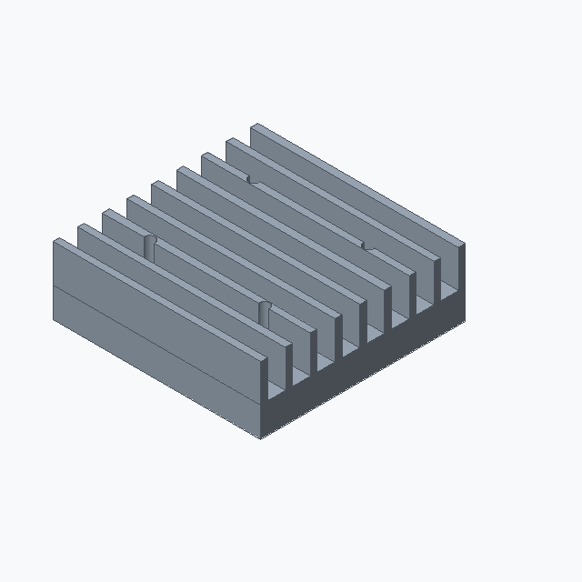
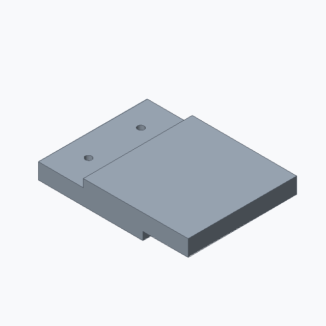
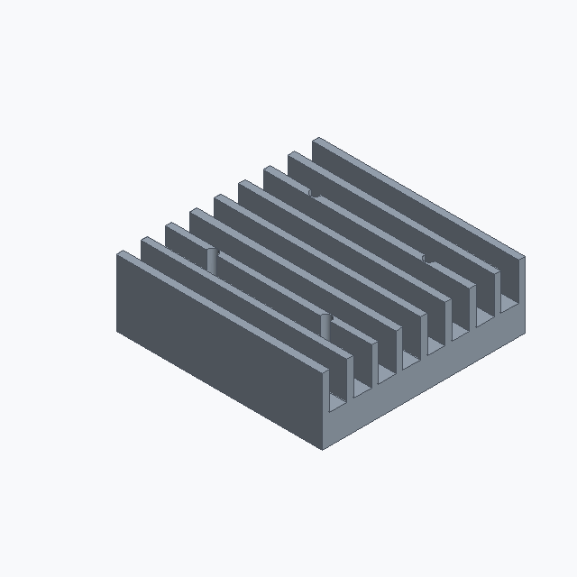
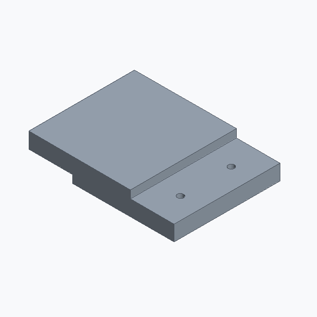

representative_success; L3; historical deployed repaired B2. Candidate status is unchanged.
Executable/scoreable case nearest complete-cohort F@1 percentile0.50, then CD percentile0.50; semantic accuracy not asserted
These are new CPU exports of locked historical code, not newly generated model predictions or recovered original temporary STEP files. Executable does not mean semantically accurate. Historical seed/checkpoint-byte binding remains unresolved.

Both meshes use the same enlarged frame. These views supplement, not replace, the target-framed images above.





A with an approximate 54.9 by 55.8 by 18.04 mm envelope. Linear ribbed heat sink mount with a 54.9 by 55.8 mm base and 18.04 mm height.
PART flluma_0007100 CAT heat_sink_base UNITS mm SEED 20267614 PARAM height 50.1 MIN 12 MAX 80 SEM overall_height PARAM hole_radius 1.53 MIN 1 MAX 8 SEM hole_radius PARAM thickness 7.7 MIN 3 MAX 25 SEM thickness PARAM width 52.1 MIN 20 MAX 120 SEM overall_width F plate_001 OP_PLATE SEM base_plate ROLE primary_body PARAMS height=@height thickness=@thickness width=@width F hole_001 OP_HOLE_PATTERN SEM mounting_hole ROLE functional_feature DEP plate_001 TARGET plate_001.top_face PARAMS count=4 depth=THROUGH positions=[[-14.588,-12.525],[14.588,-12.525],[-14.588,12.525],[14.588,12.525]] radius=@hole_radius F box_001 OP_BOX SEM heat_sink_base ROLE secondary_feature PARAMS height=@thickness length=@width width=@height F translate_001 OP_TRANSLATE SEM placement ROLE secondary_feature DEP box_001 PARAMS offset=[0,21.55,3.85] F join_001 OP_BOOLEAN_JOIN SEM joined_boss ROLE secondary_feature DEP hole_001,translate_001 TARGET hole_001,translate_001 END
# Literal first40 lines of executed prediction; full program is prediction.py
params = Parameters()
params.add('height', 50.1, min=12, max=80, semantic_type='overall_height')
params.add('hole_radius', 1.53, min=1, max=8, semantic_type='hole_radius')
params.add('thickness', 7.7, min=3, max=25, semantic_type='thickness')
params.add('width', 52.1, min=20, max=120, semantic_type='overall_width')
part = Part('flluma_0007100', category='heat_sink_base', parameters=params, seed=20267614, sample_id='flluma_0007100', units='mm')
plate = part.plate(name='thermal_base_plate', width=params['width'], height=params['height'], thickness=params['thickness'], semantic_type='base_plate')
holes = part.hole_pattern(name='corner_mounting_holes', target=plate.top_face(), radius=params['hole_radius'], depth='through', positions=[[-14.588, -12.525], [14.588, -12.525], [-14.588, 12.525], [14.588, 12.525]], semantic_type='mounting_hole')
box = part.box(name='thermal_manager_box', length=params['width'], width=params['height'], height=params['thickness'], semantic_type='thermal_store')
moved = part.translate(name='place_thermal_box', target=box, offset=[0.0, 21.55, 3.85], semantic_type='placement')
join = part.boolean_join(name='join_thermal_box', target=holes, tool=moved, semantic_type='joined_boss')
__all__ = ['part']